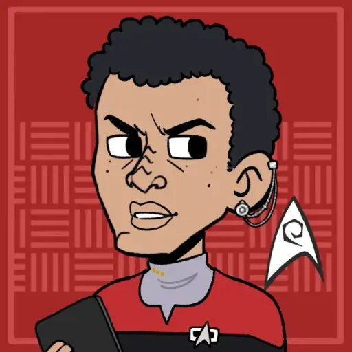
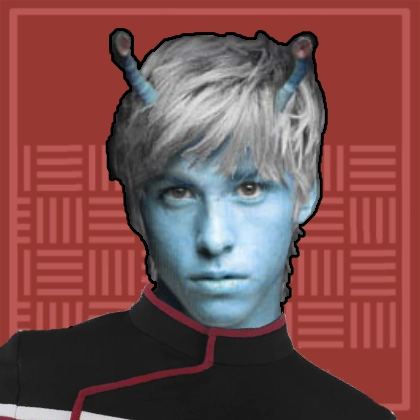
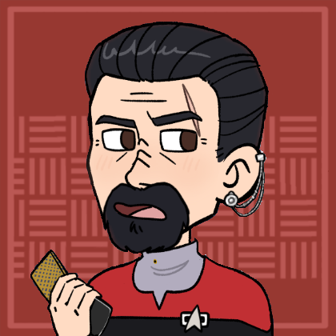
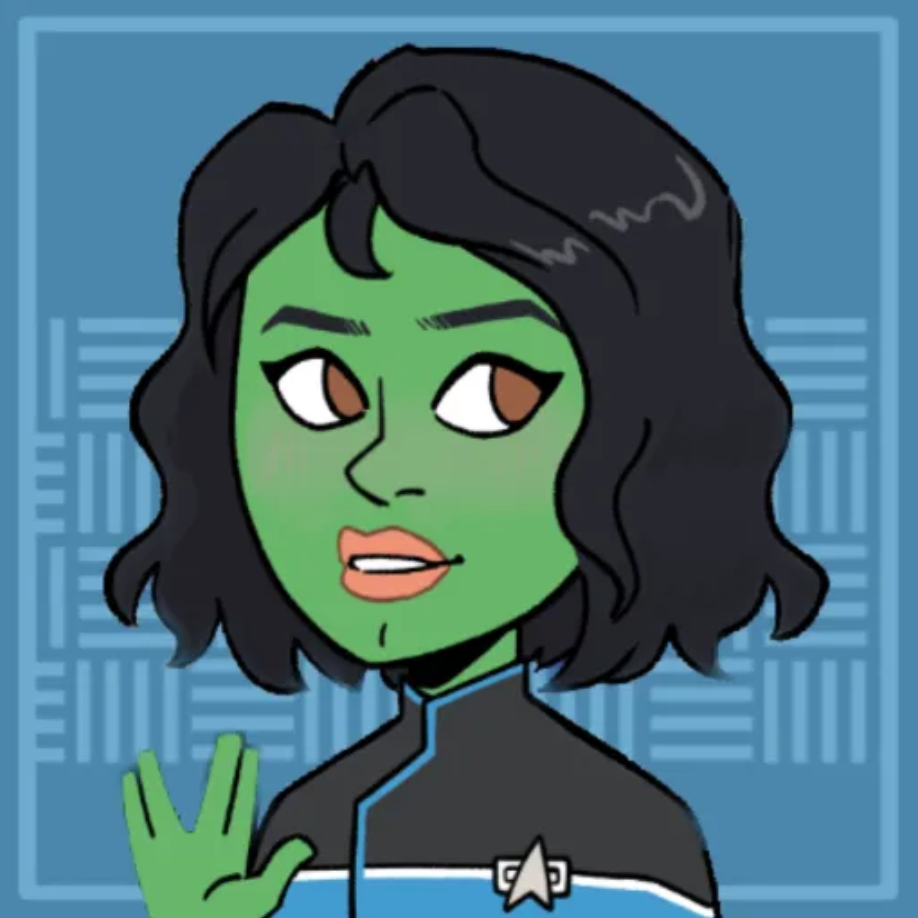
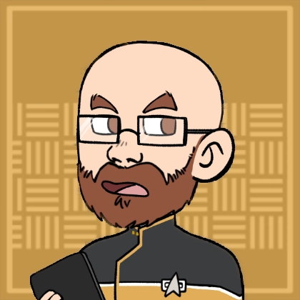
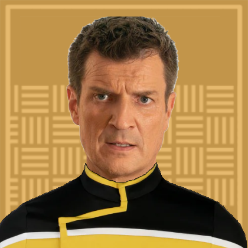
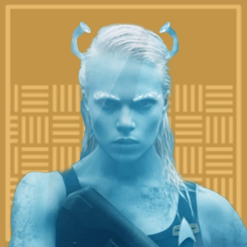
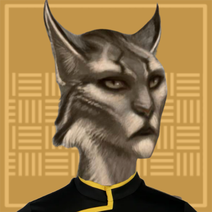

USS Sekhmet
Location:: The Shackleton Expanse
Portrait:: 
Note:: Pulled back into service to supplement Starfleet's overextended fleet, the USS Sekhmet stands on guard over Narendra station and the Shackleton Expanse beyond.
Description
The USS Sekmet is a Columbia Class cruiser stationed at Narendra Station. After the bombings on the Mars Utopia Planitia shipyards, Starfleet supplemented it's fleet by pulling retired vessels back into service with substantial refits.
The Sekhmet carries a crew of a little over 100 crewman and officers.
Traits
- Federation Starship
- Columbia Class
- Garbage Scow
Namesake
Sekhmet is the Egyptian goddess of war and medicine. The USS Sekhmet is the first of it's name, and was chosen to signal it's equal potential as a protector and threat.
Mission
The USS Sekhmet, has been assigned to Narendra station as an emergency response and tactical strike starship. While Sekhmet has a regular crew, the Narendra Station provides a rotating roster of commanding officers due to stretched personnel resources and the Sekhmet's irregular mission schedule.
Mission Logs
- Sekhmet Log 9.1 - -Abyss Station:
Stardate 67369, Session: 12
The USS Sekhmet investigated the Omega Draconis system, discovering a neutronium station, a barren planet inhabited by the Ithik, and a rotating black hole with radiation jets threatening systems within 100 light years. One away team went to the planet and met the Ithik people who were waiting for the black hole to destroy their planet and ascend to a higher form of existence. On the station, another away team visited the station's engineering section and deactivated power to security systems. They then went up to the control room, which was held by a team of Vinshari. - Sekhmet Log 9.2 - Chaktir:
Stardate 67369, Session: 13
The Sekhmet’s away team captured the station control room after defeating a Vinshari squad and discovered that its cloning facilities had been producing successive generations of the people on the planet. On Chaktir, the crew struggled to persuade the Ithik ministers to evacuate, successfully swaying Temeran and Genji by reframing the black hole’s radiation surge as divine punishment rather than ascension. Meanwhile, Commander Val underwent a dangerous Ithik nanoprobe infusion. - Sekhmet Log 9.3 - When the Abyss Looked Away:
Stardate 67369, Session: 14
The away team failed to evacuate Chaktir, but the black hole jets were stopped in time. Mayor Akkara was accidentally beamed aboard and chose to stay. The crew departed the system, leaving the station intact but rigged to alert Starfleet. - Sekhmet Log 10 - Convoy SE-119:
Stardate 68462, Session: 15
The crew investigated the Bacchus Artifact and received a telepathic message before securing it behind a telepathic barrier. Later, during an escort mission through subspace eddies, the Sekhmet and a colonization convoy was ambushed by Vinshari pirates. - Sekhmet Log 10.2 - Ha'kiv:
Stardate 68462, Session: 16
The Sekhmet team fought off the remaining Vistani, but one ship escaped after harpooning a Federation freighter. They discovered a Vistani prisoner and a large slug-like creature used to power Vistani warp drives. Hoping to use the creature to trace the fleeing ship, the crew secured it, while Val began interrogating the prisoner. - Sekhmet Log 11.1 - Ambush:
Stardate 68560, Session: 17
Sekhmet tracked the Vinshari ships from the convoy raid as far as the Amaddon system, where Vinshari harpooned a feeding Ha’kiv and demanded the Sekhmet’s warp core. The crew refused, optimized defenses, and found shield frequency holes to strike back. - Sekhmet Log 11.2 - Boarded:
Stardate 68576, Session: 18
Sekhmet’s opening phaser strikes landed, but the Vinshari recovered, disabled the ship, harpooned it, and boarded. With the bridge under assault and Engineering collapsing, Val fell critically wounded as a Vinshari leader started hacking the console to jettison the warp core. - Sekhmet Log 11.3 - The Ar-Ka-Se:
Stardate 68576, Session: 19
The bridge crew repelled Vinshari boarders, then made a surprise attack to retake Engineering before the enemy could eject the warp core. After control was restored, Captain J’lara requested help and arrived with a Tilikaal science officer aboard the Sekhmet.
Crew Members
Department Heads
| Role4 | Rank + " " + file.link + "" | " (" + pronouns + ") - " + Species | choice(Type = "Player Character", "" + Type + "", Type) | Portrait | " > " + Summary |
|---|---|---|---|---|---|
| Captain | Captain Vrenta Ewasii | (he/him) - Bajoran | Non-Player Character |  | A no nonsense captain serving on the Sekhmet to get away from home. |
| Executive Officer | Lt Commander Shranval | (they/them) - Andorian, Vulcan | Player Character |  | Former Andorian military, now working in Starfleet to make a difference on a new frontier. |
| Science Officer | Lieutenant Sorran | (he/him) - Denobulan | Player Character |  | An expert in hazardous material properties and disposal, with a contingency for every situation and a curiosity for every field of knowledge. |
| Chief of Security | Lieutenant JG Conrak | (he/him) - Haplorian | Player Character |  | Competitive, fierce, and looking to serve and protect after experiencing the Battle of Wolf-359. |
Command Division
| Role3 | Rank + " " + file.link + "" | "(" + pronouns + ") - " + Species | choice(Type = "Player Character", "" + Type + "", Type) | Portrait | "> " + Summary |
|---|---|---|---|---|---|
| Executive Officer | Lt Commander Shranval | (they/them) - Andorian, Vulcan | Player Character | Former Andorian military, now working in Starfleet to make a difference on a new frontier. | |
| Flight Controller | Ensign Tennan Li | (he/him) - Bajoran | Player Character |  | A survivor, haunted by loss, struggling to prove he can rise above vengeance. |
| Flight Controller | Crewman 2nd Class Relek Tovan | (he/him) - Cardassian | Supporting Character |  | Saved from execution after the Dominion War by Val and now piloting the Sekhmet. |
Sciences Division
| Role6 | Rank + " " + file.link + "" | "(" + pronouns + ") - " + Species | choice(Type = "Player Character", "" + Type + "", Type) | Portrait | "> " + Summary |
|---|---|---|---|---|---|
| Science Officer | Lieutenant Sorran | (he/him) - Denobulan | Player Character | | An expert in hazardous material properties and disposal, with a contingency for every situation and a curiosity for every field of knowledge. |
| Nurse | Lieutenant Edo'erax | (she/her) - Edosian | Supporting Character |  | Shares a constant concern for workplace safety with Sorran |
| Botanist | Lieutenant JG Evi | (she/her) - Andorian | Supporting Character |  | Expert in agricultural, ecological, and botanical crises. Also a fellow bonsai enthusiast alongside Conrak. |
| Ship Counsellor | Lieutenant JG Grav Tholgar | (-) - Tellerite | Supporting Character |  | Challenges patients to face their inner selves with pointed rhetoric. |
| Lab Technician | Ensign Su'Kra | (she/her) - Kelpian | Supporting Character |  | Brought on board the USS Sekhmet to learn under Sorran's wing |
| Science Cadet | Cadet Vaana Tavi | (she/her) - Orion | Supporting Character |  | On the Sekhmet as part of her Starfleet Academy training. |
Operations Division
| Role7 | Rank + " " + file.link + "" | "(" + pronouns + ") - " + Species | choice(Type = "Player Character", "" + Type + "", Type) | Portrait | "> " + Summary |
|---|---|---|---|---|---|
| Transport Chief | Lieutenant Bernard Johnson | (he/him) - Human | Supporting Character |  | A simple guy who likes what he knows. Content within the confines of The Sekhmet transporter room. However he's eager and ready to serve in anyway possible. |
| Chief of Security | Lieutenant JG Conrak | (he/him) - Haplorian | Player Character | | Competitive, fierce, and looking to serve and protect after experiencing the Battle of Wolf-359. |
| Engineering Specialist | Lieutenant JG Bov | (he/him) - Aenar | Supporting Character |  | Constantly excited to work and shares a love of electro-plasma with Skklarr. |
| Chief Engineer | Master Chief Skklarr | (he/him) - Gorn | Supporting Character |  | A Gorn raised by the overly cautious Kelpians, now working as an engineer on a frontier that's anything by safe. |
| Security NCOIC | Chief Petty Officer Douglas Karnes | (he/him) - Human | Supporting Character |  | Just looking to do his job and do it well. |
| Security Specialist | Master Chief Hick | (he/him) - Andorian | Supporting Character |  | A hot shot looking for a fight as part of Conrak's security team. |
| Yeoman | Petty Officer First Class Himari | (they / them) - Caitian | Supporting Character |  | A legal expert serving to provide intel to the leadership of the USS Sekhmet |
Passengers
| Role0 | Rank + " " + file.link + "" | "(" + pronouns + ") - " + Species | "" + Type + "" | Portrait | "> " + Note |
|---|
Ship Locations
Facilities
| File0 | "> " + Note |
|---|
Shuttles
| File0 | "> " + Note |
|---|